Astralbum
AstralbumAstralbum
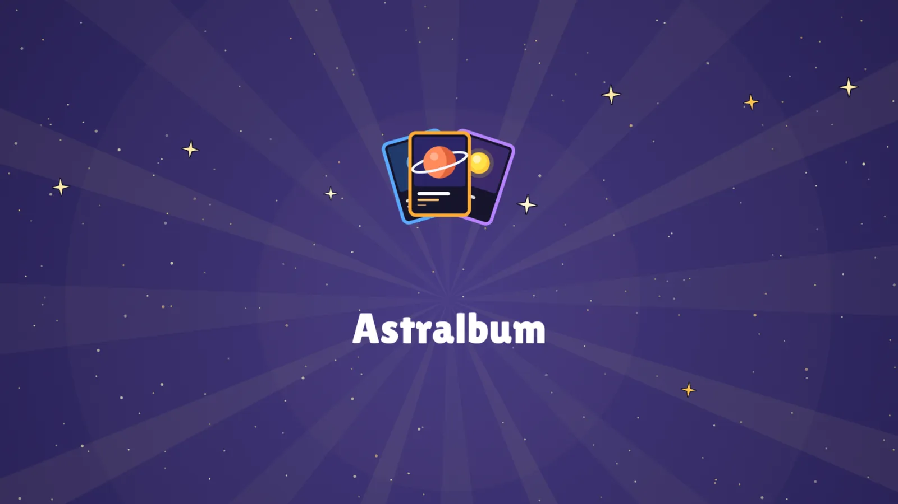
Gratuit et sans publicité
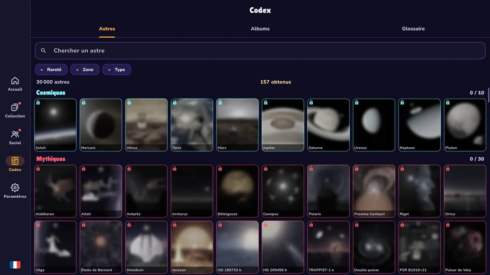
30 000 astres réels à collectionner
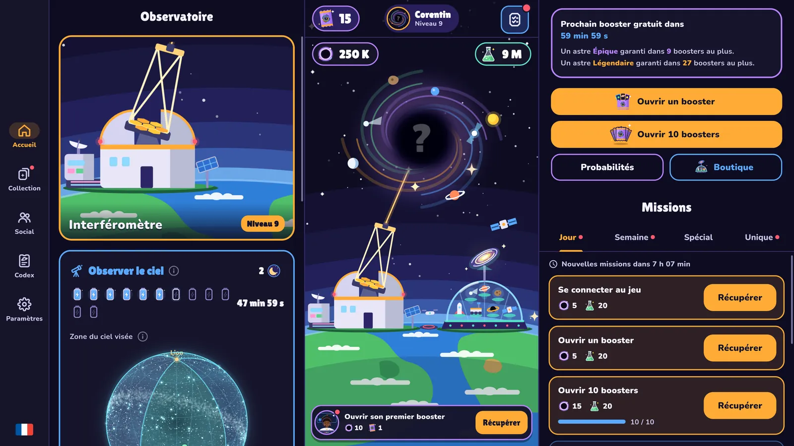
Découvre des astres au télescope
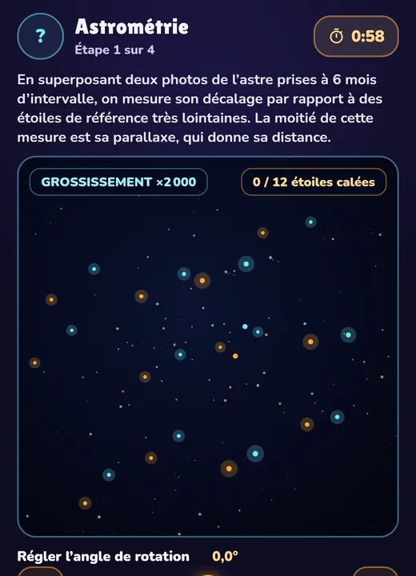
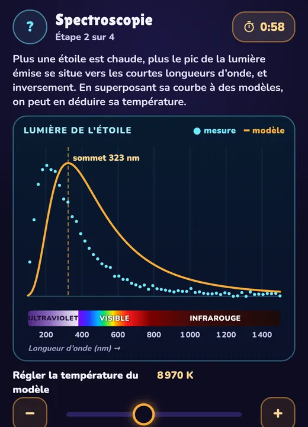
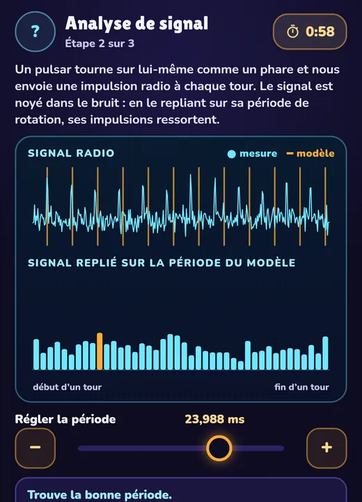
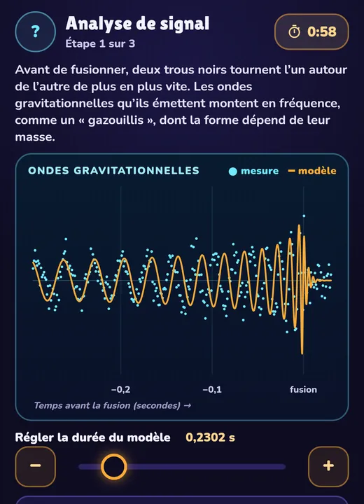
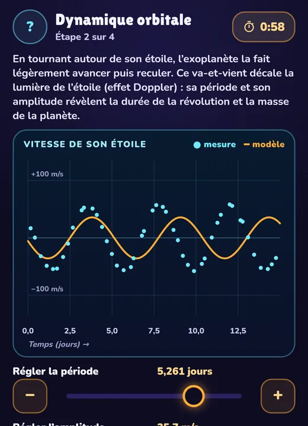
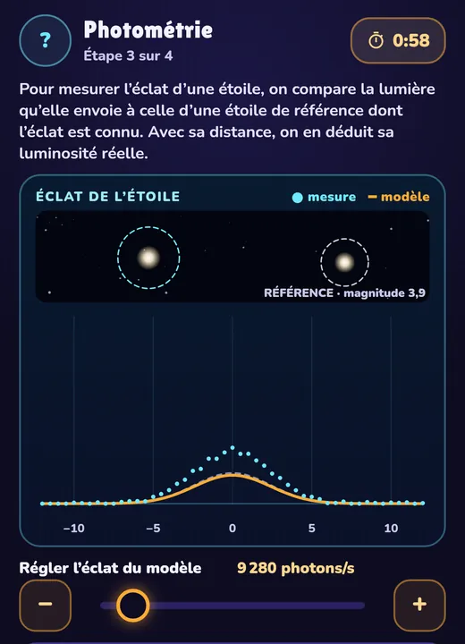
Analyse les données
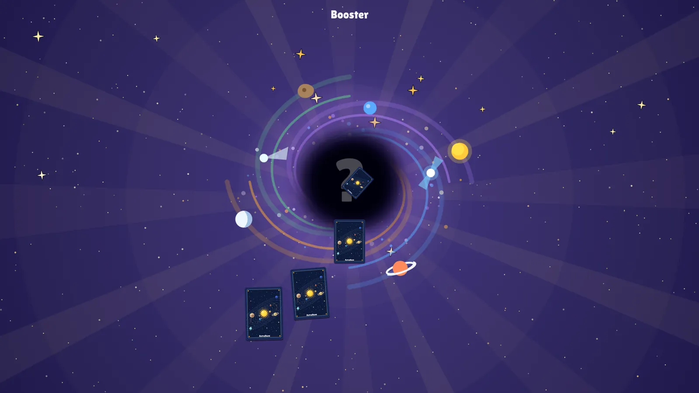
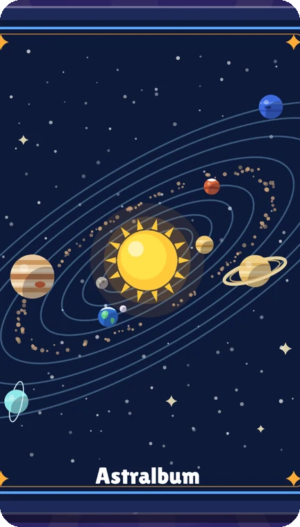
Ouvre des boosters
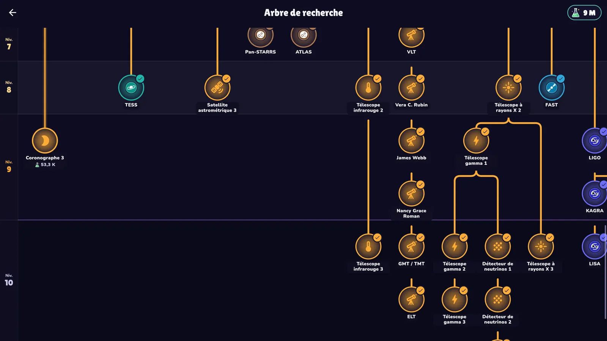
Effectue des recherches scientifiques
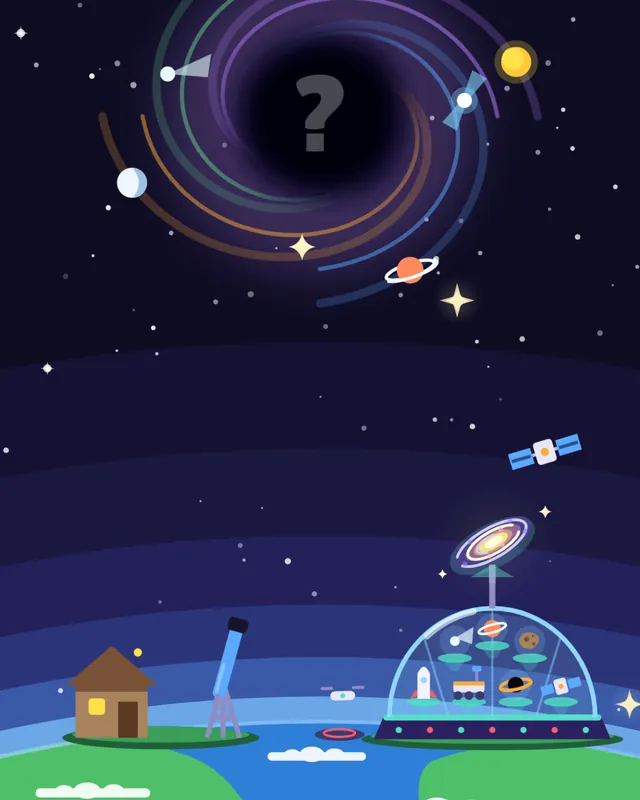
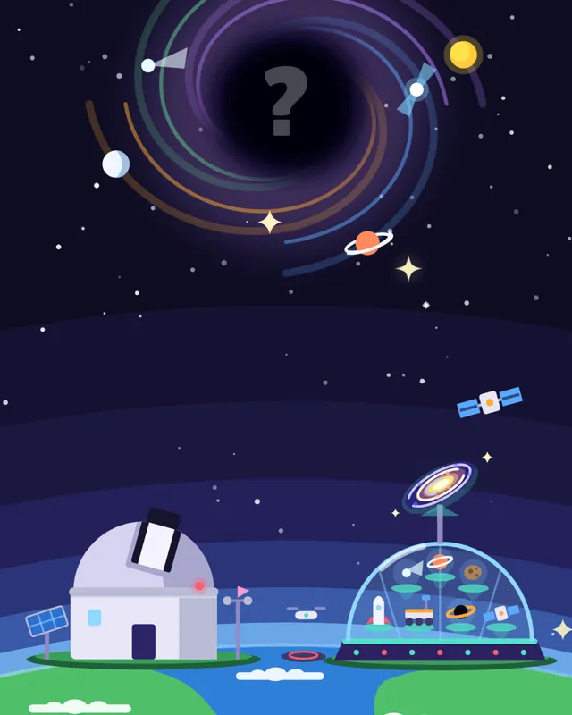
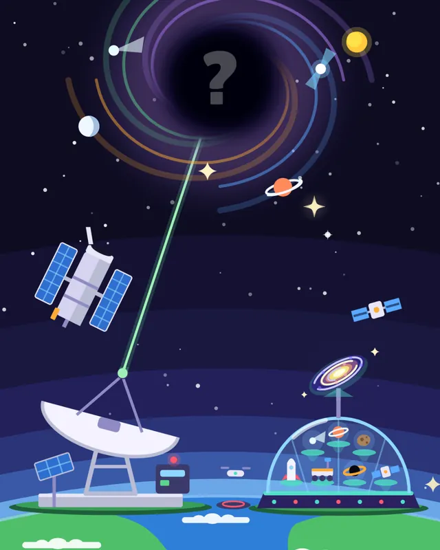
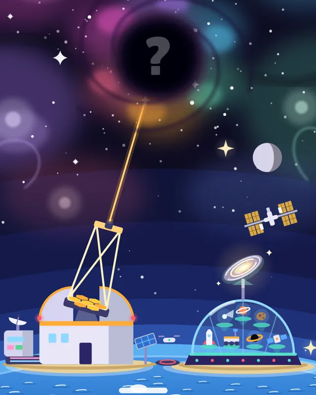
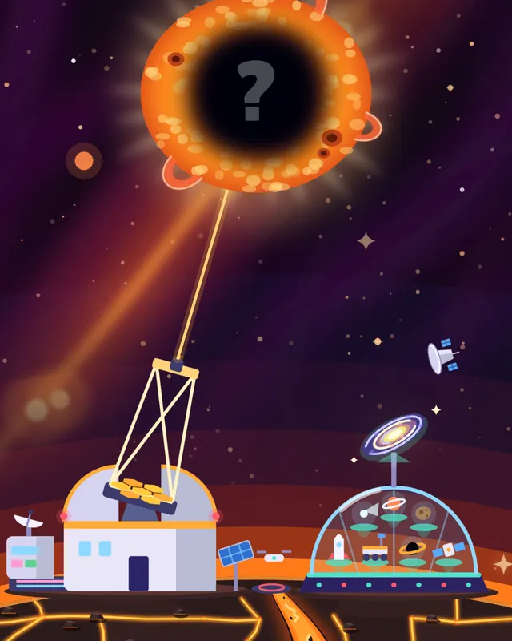
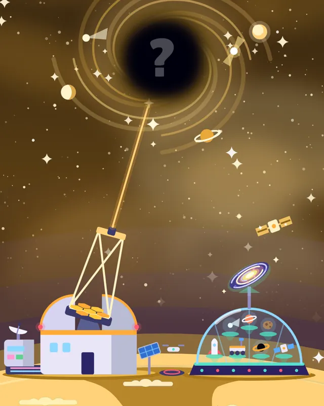
Améliore ton observatoire
Questions fréquentes
Comment jouer ?
Clique sur « Jouer » : le jeu s'ouvre dans ton navigateur, sans rien installer. Il faut avoir au moins 16 ans et se connecter avec un compte Google, qui garde ta progression. Le jeu est gratuit et sans publicité ; des achats facultatifs existent, aucun n'est nécessaire pour jouer.
Vaut-il mieux jouer sur navigateur ou sur Android ?
Le jeu est identique, et ta progression est enregistrée sur le serveur : avec le même compte, tu peux passer de l'un à l'autre quand tu veux. Si tu rencontres un bug, essaie un autre navigateur ou l'application Android. Les achats facultatifs se font pour le moment uniquement dans l'application Android.
Les astres sont-ils réels ?
Oui. Les 30 000 astres du jeu existent vraiment : ils viennent de catalogues scientifiques publics. Les sources sont citées dans Sources et crédits.
Comment supprimer mon compte ?
Dans le jeu : Paramètres, puis « Supprimer mon compte » ; le compte est effacé tout de suite. Sans le jeu, c'est possible par e-mail : tout est expliqué sur la page Supprimer mon compte.